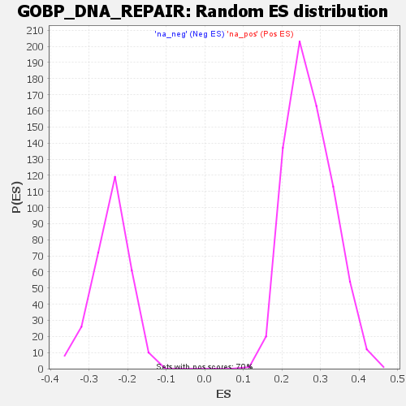

Profile of the Running ES Score & Positions of GeneSet Members on the Rank Ordered List
| Dataset | rank |
| Phenotype | NoPhenotypeAvailable |
| Upregulated in class | na_neg |
| GeneSet | GOBP_DNA_REPAIR |
| Enrichment Score (ES) | -0.5636086 |
| Normalized Enrichment Score (NES) | -2.337725 |
| Nominal p-value | 0.0 |
| FDR q-value | 0.0 |
| FWER p-Value | 0.0 |
| SYMBOL | RANK IN GENE LIST | RANK METRIC SCORE | RUNNING ES | CORE ENRICHMENT | |
|---|---|---|---|---|---|
| 1 | KAT5 | 77 | 53.901 | -0.0096 | No |
| 2 | SPIRE2 | 126 | 43.723 | -0.0107 | No |
| 3 | RRM2B | 215 | 33.336 | -0.0355 | No |
| 4 | PELI1 | 254 | 30.092 | -0.0385 | No |
| 5 | KDM1A | 341 | 24.442 | -0.0666 | No |
| 6 | POLD3 | 387 | 21.974 | -0.0769 | No |
| 7 | TP73 | 393 | 21.750 | -0.0687 | No |
| 8 | EME2 | 445 | 19.581 | -0.0829 | No |
| 9 | PARP10 | 479 | 18.818 | -0.0891 | No |
| 10 | ATRX | 493 | 18.294 | -0.0863 | No |
| 11 | JMY | 555 | 16.199 | -0.1067 | No |
| 12 | BTG2 | 614 | 14.895 | -0.1265 | No |
| 13 | NUDT16L1 | 616 | 14.851 | -0.1197 | No |
| 14 | KAT2B | 636 | 14.317 | -0.1216 | No |
| 15 | SETD7 | 671 | 13.508 | -0.1309 | No |
| 16 | SAMHD1 | 719 | 12.402 | -0.1467 | No |
| 17 | AXIN2 | 798 | 10.901 | -0.1777 | No |
| 18 | MC1R | 823 | 10.550 | -0.1837 | No |
| 19 | FBXO6 | 849 | 10.100 | -0.1904 | No |
| 20 | SMARCD3 | 978 | 8.234 | -0.2459 | No |
| 21 | PARP9 | 1036 | 7.513 | -0.2687 | No |
| 22 | H2AC25 | 1068 | 7.086 | -0.2797 | No |
| 23 | WAS | 1289 | 4.745 | -0.3796 | No |
| 24 | ZNF365 | 1465 | -5.097 | -0.4585 | No |
| 25 | DMC1 | 1515 | -5.843 | -0.4784 | No |
| 26 | NEIL3 | 1679 | -10.319 | -0.5492 | No |
| 27 | RAD54L | 1709 | -11.402 | -0.5571 | No |
| 28 | DDX11 | 1724 | -11.881 | -0.5578 | Yes |
| 29 | RAD51AP1 | 1737 | -12.402 | -0.5574 | Yes |
| 30 | EME1 | 1749 | -12.842 | -0.5563 | Yes |
| 31 | PTTG1 | 1754 | -13.090 | -0.5518 | Yes |
| 32 | SFR1 | 1756 | -13.162 | -0.5459 | Yes |
| 33 | ZGRF1 | 1762 | -13.349 | -0.5417 | Yes |
| 34 | GINS2 | 1803 | -15.521 | -0.5528 | Yes |
| 35 | USP3 | 1810 | -15.741 | -0.5479 | Yes |
| 36 | POLQ | 1823 | -16.321 | -0.5456 | Yes |
| 37 | EXO1 | 1826 | -16.427 | -0.5386 | Yes |
| 38 | KIF22 | 1835 | -16.927 | -0.5341 | Yes |
| 39 | UCHL5 | 1837 | -17.110 | -0.5262 | Yes |
| 40 | RBBP8 | 1849 | -17.889 | -0.5227 | Yes |
| 41 | HMGB2 | 1855 | -18.043 | -0.5163 | Yes |
| 42 | CDCA5 | 1857 | -18.079 | -0.5080 | Yes |
| 43 | UBE2T | 1859 | -18.112 | -0.4996 | Yes |
| 44 | RFC4 | 1863 | -18.448 | -0.4921 | Yes |
| 45 | HMGA1 | 1885 | -19.195 | -0.4925 | Yes |
| 46 | DCLRE1A | 1891 | -19.470 | -0.4854 | Yes |
| 47 | BRCA1 | 1894 | -19.527 | -0.4769 | Yes |
| 48 | POLE2 | 1899 | -19.845 | -0.4691 | Yes |
| 49 | PAXIP1 | 1919 | -20.679 | -0.4679 | Yes |
| 50 | XRCC4 | 1929 | -21.122 | -0.4618 | Yes |
| 51 | NPAS2 | 1934 | -21.418 | -0.4533 | Yes |
| 52 | CLSPN | 1937 | -21.641 | -0.4438 | Yes |
| 53 | UHRF1 | 1944 | -22.126 | -0.4358 | Yes |
| 54 | CDC45 | 1950 | -22.532 | -0.4272 | Yes |
| 55 | TDP2 | 1969 | -23.480 | -0.4242 | Yes |
| 56 | RRM1 | 1988 | -24.707 | -0.4206 | Yes |
| 57 | KIN | 1990 | -24.763 | -0.4090 | Yes |
| 58 | RAD18 | 1997 | -25.239 | -0.3996 | Yes |
| 59 | RAD1 | 2001 | -25.451 | -0.3886 | Yes |
| 60 | ABL1 | 2002 | -25.507 | -0.3763 | Yes |
| 61 | SUPT3H | 2009 | -26.922 | -0.3660 | Yes |
| 62 | SKP2 | 2015 | -27.075 | -0.3552 | Yes |
| 63 | WDHD1 | 2017 | -27.269 | -0.3424 | Yes |
| 64 | RFC3 | 2026 | -28.164 | -0.3325 | Yes |
| 65 | ERCC8 | 2030 | -28.443 | -0.3201 | Yes |
| 66 | NABP1 | 2039 | -29.544 | -0.3095 | Yes |
| 67 | SMARCE1 | 2058 | -31.658 | -0.3025 | Yes |
| 68 | YEATS4 | 2061 | -32.119 | -0.2878 | Yes |
| 69 | HMGA2 | 2079 | -33.357 | -0.2796 | Yes |
| 70 | RAD51 | 2113 | -36.964 | -0.2770 | Yes |
| 71 | RFC5 | 2114 | -37.020 | -0.2590 | Yes |
| 72 | MCM7 | 2121 | -37.990 | -0.2434 | Yes |
| 73 | HLTF | 2124 | -38.269 | -0.2257 | Yes |
| 74 | GINS4 | 2125 | -38.333 | -0.2072 | Yes |
| 75 | UBE2N | 2127 | -38.959 | -0.1887 | Yes |
| 76 | FEN1 | 2128 | -39.114 | -0.1698 | Yes |
| 77 | H2AX | 2140 | -40.642 | -0.1552 | Yes |
| 78 | RFWD3 | 2158 | -44.769 | -0.1414 | Yes |
| 79 | CHEK1 | 2199 | -64.379 | -0.1287 | Yes |
| 80 | SIRT1 | 2219 | -87.108 | -0.0953 | Yes |
| 81 | CCDC117 | 2221 | -91.868 | -0.0512 | Yes |
| 82 | FBXW7 | 2229 | -116.146 | 0.0019 | Yes |
